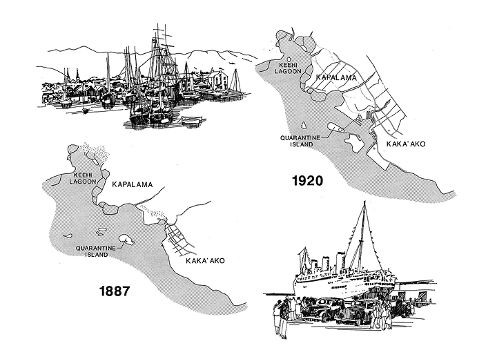
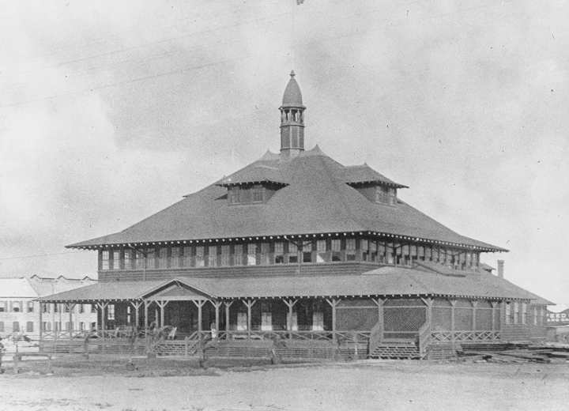

Previously a small reef known to Native Hawaiians as Kahakaʻaulana, the Sand Island we know today was once called Mauliola by King Kamehameha V. Over the years, sediment from small dredging projects were dumped onto the reef, creating Quarantine Island, which was used to quarantine ships and people with contagious diseases.
Photo credit: Hawaiʻi Department of Transportation

The second picture depicts one of the structures on Quarantine Island, used to house newly arrived immigrants during mandatory isolation. Because Native Hawaiians were especially vulnerable to foreign diseases, quarantining newcomers was a crucial step in preventing the spread of illness to the native population.
Photo credit: Hawaiʻi State Archives Digital Collection